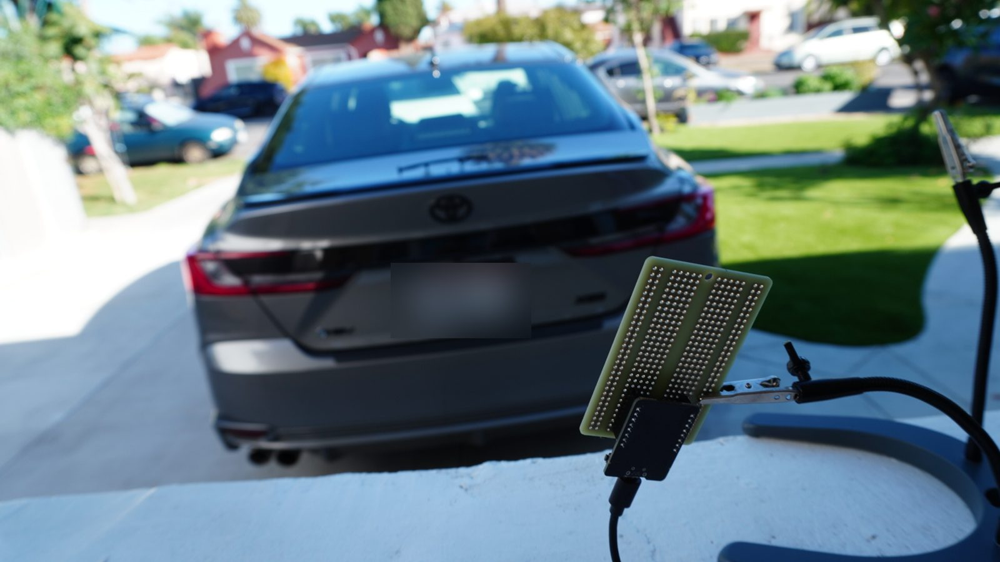
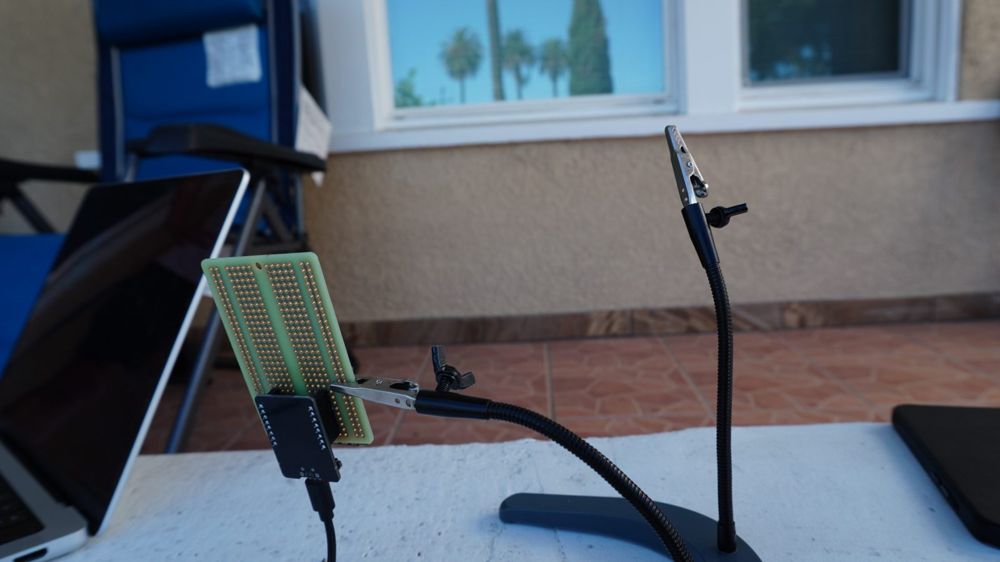
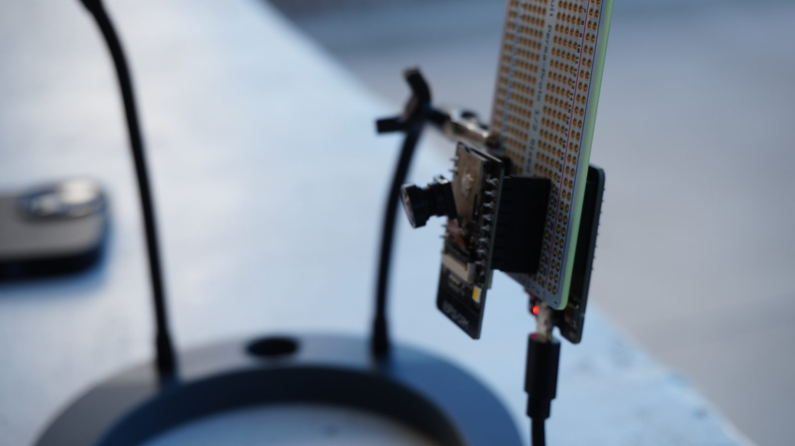
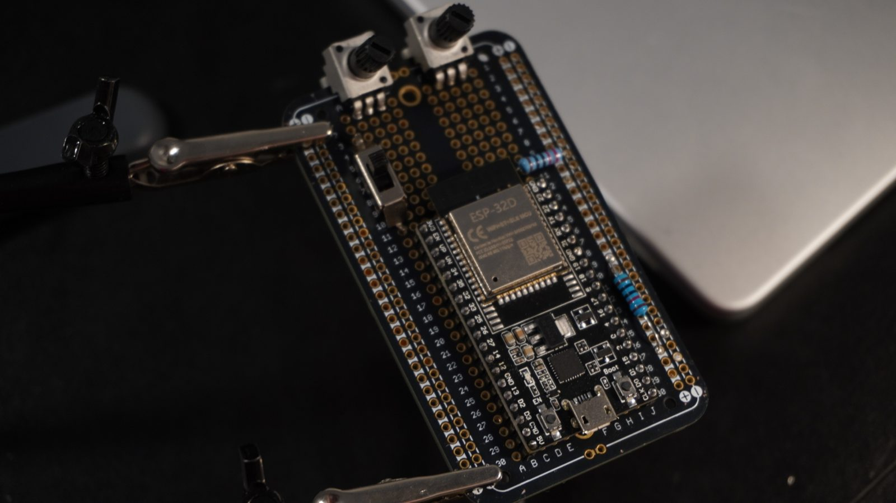
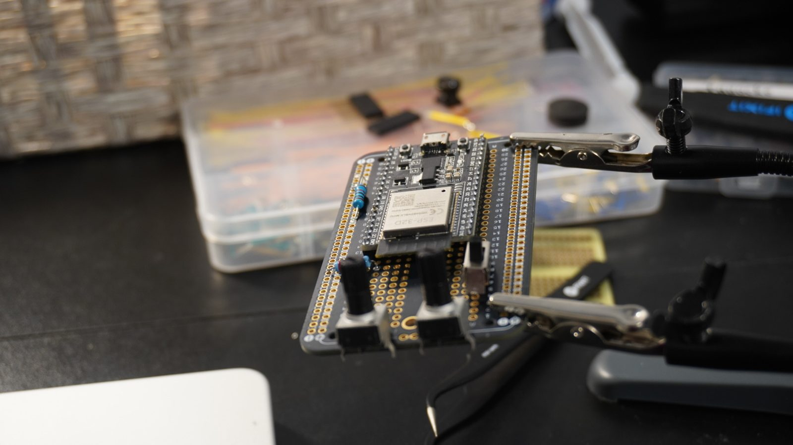

Product development engineer, student startup, May 2025 to Feb 2026
Finding parking in busy parts of Los Angeles wastes time and fuel. The earlier Parking Pal prototypes sensed one spot at a time. This version moves to computer vision: a small camera board that detects parked cars with a model running on the device itself.



See the first prototype and the second prototype.

